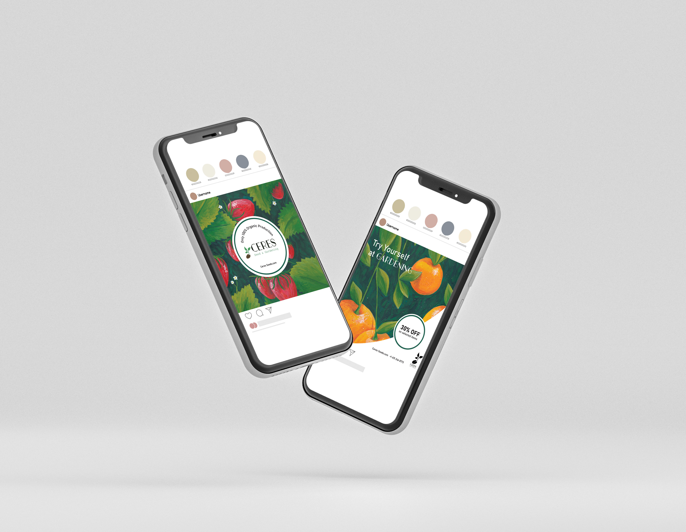
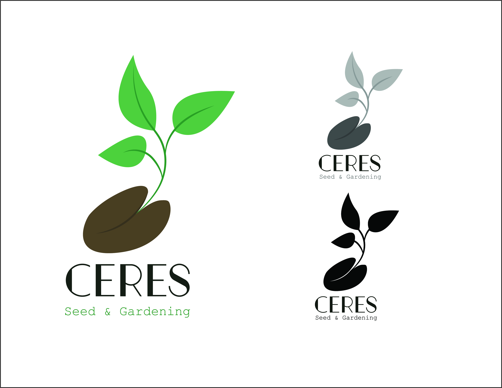
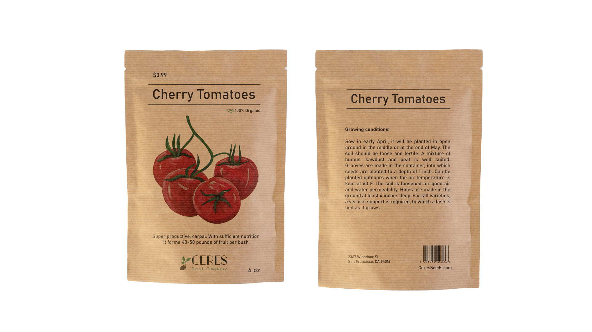
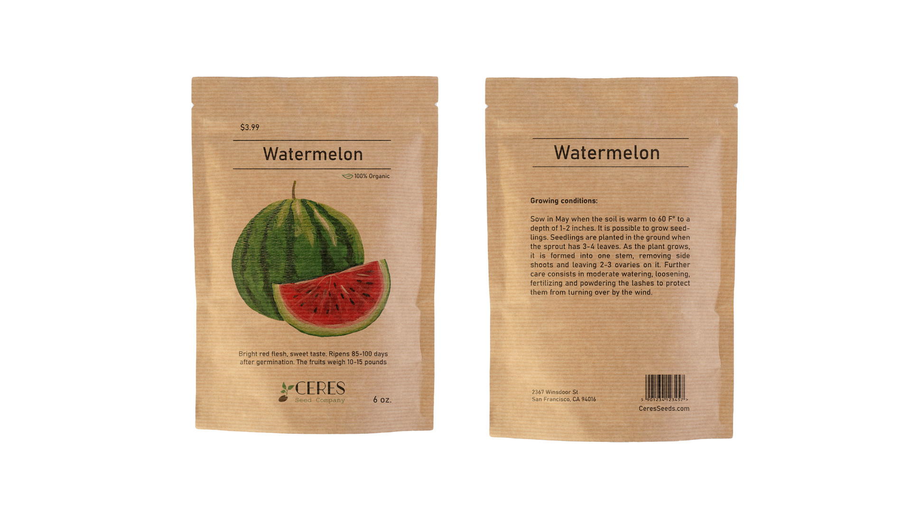

This branding project was for a company specializing in seeds and gardening supplies. The aim was to create an identity that reflected the company’s focus on sustainable gardening practices and eco-friendly products.
   The visual identity was designed using natural colors and elements such as leaves and plants to convey the message of sustainability. The branding included a logo, packaging, and digital marketing materials that helped the company connect with gardening enthusiasts.